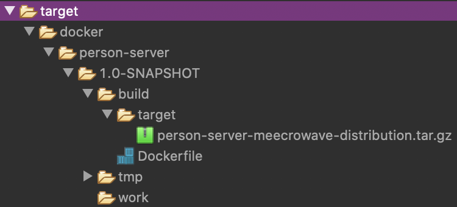

Meecrowave und Docker - so einfach gehts
In einem meiner letzten Blogbeiträge habe ich darüber berichtet, wie einfach mit Meecrowave ein Microservice erstellt werden kann. Heute geht es darum, den Microservice in ein Docker-Image zu bündeln und als Container zu starten.
Für das Beispiel mit Docker greife ich wieder auf mein Beispiel-Projekt aus dem initialen Blogbeitrag zu Meecrowave zurück. Zur besseren Nachvollziehbarkeit findet sich der Source-Code auf GitHub.
Für das Docker-Experiment benötige ich die folgenden Plugins:
- Meecrowave Maven Plugin=Mit diesem Plugin lässt sich nicht nur ein Meecrowave-Projekt mittels Maven starten, sondern über den Befehl
mvn meecrowave:bundleeine Distribution von Meecrowave erstellen, die alle notwendigen Bibliotheken sowie Skripte zum Starten und Stoppen des Servers mitliefert. - Docker Maven Plugin=Das von Fabric8 bereitgestellte Plugin kann aus einem Dockerfile und ein wenig Konfiguration in Maven ein Docker-Image erzeugen. Dabei kann die Konfiguration des Docker-Images komplett über Maven oder ein natives Dockerfile vorgenommen werden.
Mit diesen zusätzlichen Plugins wird das Modul person-server ausgestattet. Ich werde weiter unten im Blogbeitrag auf die Details eingehen.
Dockerfile bereitstellen
Ich habe mich dazu entschieden, nicht alle Funktionen des Docker Maven Plugins auszureizen, sondern auf ein natives Dockerfile zurückzugreifen. Somit besteht nicht nur die Möglichkeit, das Image mit Maven zu bauen, sondern auch mittels docker build.
Vergleichbar mit dem Helidon-Projekt liegt das Dockerfile im Root-Verzeichnis des Maven-Moduls person-server.
Das Dockerfile basiert auf Adopt OpenJDK 8 und enthält zwei Besonderheiten in den Zeilen 8 und 13.
Mit dem Meecrowave Maven Plugin lässt sich eine Distribution erzeugen, die in verschiedenen Unterverzeichnissen alle notwendigen Dateien enthält, um Meecrowave auf einem Unix- oder Windows-System zu starten.
Damit die Distribution automatisch durch den Befehl ADD entpackt wird, muss diese im Format tar.gz vorliegen. Das ebenfalls produzierbare ZIP-Format wird durch Docker nicht als komprimiertes Archiv erkannt. In unserem Arbeitsverzeichnis /opt wird das gepackte Verzeichnis in den Ordner person-server extrahiert.
Meecrowave bietet bei den Start-Skripten die Möglichkeit, verschiedene Parameter mitzugeben, sodass der Server entweder im Vorder- oder Hintergrund gestartet wird. Der Parameter run sorgt für den Start im Vordergrund und dafür, dass der Docker-Container nach dem Start nicht wieder beendet wird.
Nachteilig ist bei der gewählten Variante, dass ein docker stop den Server nicht sauber terminiert, sondern nach dem Timeout ein SIGKILL sendet und der laufende Prozess brutal abgebrochen wird.
Mit diesem Dockerfile sind wir bereits soweit, mittels
mvn clean package meecrowave:build
und einem anschließenden docker build . ein Image zu erzeugen, welches einen Meecrowave-Server startet.
Das reicht mir aber noch nicht. Das Modul person-server soll mittels mvn clean package vollständig inklusive Docker-Image gebaut werden.
Maven anpassen und Paketierung automatisieren
Für den optimierten Bau wird über das Meecrowave Maven Plugin die Erzeugung der Distribution beeinflusst. Standardmäßig erzeugt das Plugin eine Distribution im Format ZIP und den unintuitiven Verzeichnisnamen person-server-distribution. Dabei setzt sich der Verzeichnisname für das zu entpackende Archiv per Definition immer aus ${project.artifactId}-distribution zusammen.
Durch die Definition der Formate (Zeile 6-9) wird jeweils eine Distribution als ZIP-Archiv und als Tarball Gnu-Zip erzeugt. Letzteres wird verwendet, um das Docker-Image zu erzeugen. Das ZIP-Archiv kann bspw. verwendet werden, um die Anwendung für ein Windows-System bereitzustellen.
Mit rootName (Zeile 10) wird der Name des gepackten Verzeichnisses beeinflusst. Statt person-server-distribution heißt das gepackte Verzeichnis nun nur noch wie unser Modul person-server.
Durch die Konfiguration der executions-Passage koppeln wir den Prozess der Distributionserstellung automatisch an den Maven-Lebenszyklus package.
Fehlt noch der automatische Bau des Docker-Images - darum kümmern wir uns jetzt.
Docker-Image mit Maven automatisieren
Damit das Docker-Image reproduzierbar und automatisch über den Build-Prozess erzeugt werden kann, gibt es das Docker Maven-Plugin. Wenn man so wie ich ein natives Dockerfile verwendet, ist das Plugin einfach konfiguriert. Damit sich das Docker-Image sowohl mit Maven als auch mit docker build erstellen lässt, sind einige Dinge zu beachten.
Das Plugin ist ziemlich mächtig und seine Funktionalitäten mache ich mir zunutze, den Build-Prozess zu automatisieren. Auf die allgemeine Konfiguration des Plugins gehe ich in diesem Beitrag nicht ein. Die Dokumentation des Projekts ist ziemlich ausführlich, sodass ich mich hier auf die Besonderheiten beschränken will:
- name und alias (Zeile 7/8) sorgen dafür, dass das erzeugte Image sich eindeutig in den lokalen Docker-Images wiederfinden lässt.
- contextDir gibt an, wo das native Dockerfile gespeichert ist. In diesem Fall im Root-Verzeichnis des Moduls.
- name (Zeile 12) ist eine Besonderheit, um die Kompatibilität zu
docker buildaufrecht zu erhalten. Standardmäßig legt das Plugin alle für das Image notwendigen Dateien unter build/maven relativ zu seinem eigenen Arbeitsverzeichnis ab. Durch das Überschreiben des Namens werden fortan die Dateien relativ unter build/target abgelegt und sowohldocker buildals auch das Maven Plugin können mit dem gleichen nativen Dockerfile arbeiten. - fileSet (Zeile 14-20) sorgt dafür, dass Maven Assembly genutzt wird und nur unsere Distribution in das Docker-Image übertragen wird. Das Plugin unterstützt zwar auch die Assembly-Befehle wie project oder artifact, diese wären an dieser Stelle allerdings ungeeignet.
Die Abbildung zeigt das Ergebnis der Verwendung von name und fileSet. Das Unterverzeichnis unterhalb von build lautet auf target und es wird ausschließlich die erzeugte Tarball-Distribution in das Arbeitsverzeichnis kopiert.

Mit der Konfiguration unter executions wird wieder dafür gesorgt, dass das Docker-Image bereits in der Phase package erstellt wird.
Nun sind wir in der Lage mittels mvn clean package die Anwendung inkl. Docker-Image zu erstellen und anschließend einen Container zu starten:
docker run -d -p 8080:8080 person-server
Über curl http://localhost:8080/person lässt sich prüfen, oder der Microservice korrekt arbeitet.
Zusammenfassung
Mit dem Meecrowave Maven Plugin und dem Docker Maven Plugin lässt sich die Erstellung eines Microservices auf Basis von Apache Meecrowave soweit automatisieren, dass am Ende des Build-Prozesses ein fertiges Docker-Image für das Deployment auf einer Kubernetes- oder Mesos-Umgebung zur Verfügung steht.
Der Aufwand für die Erweiterung eines bereits bestehenden Projekts hält sich dabei in Grenzen.